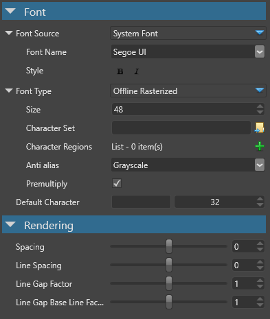
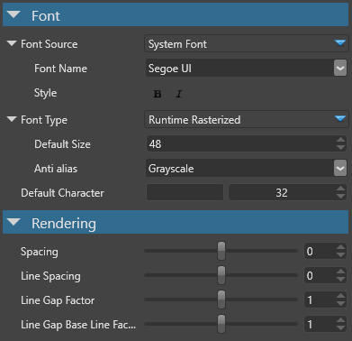
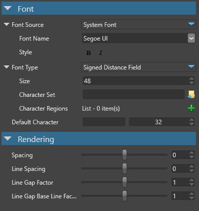
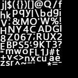
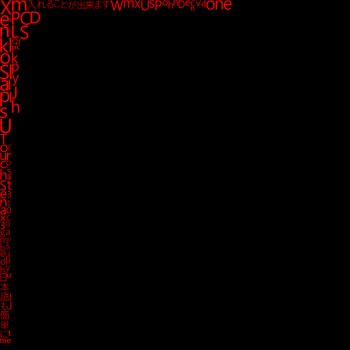
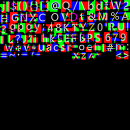

スプライト フォント
中級
スプライト フォントは、入力として TrueType フォント（システムフォントまたはユーザーが割り当てたファイル）を受け取り、ゲームの文字（グリフ）のすべての画像（スプライト）を作成します。
フォントを直接レンダリングすることは大体非効率です。 通常、フォントの作成（ラスタライズ）は一度だけにして、あとは必要なときに文字（例：A、a、B、Cなど）の画像をレンダリングするだけにしたいと考えます。 そのためには、文字のスプライト（ビルボード化された長方形の画像）を作成し、それを通常の画像として画面に表示するようにします。 テキストブロックは、すべての文字が適切な位置と間隔で配置されるように、四角形としてレンダリングされたスプライトの集合体となります。
オフライン ラスタライズ スプライトフォント
オフライン ラスタライズ スプライトフォントは、一定の大きさの文字（グリフ）を一定数作成（ラスタライズ）し、ゲームのアセットを構築する際にアトラス テクスチャーにベイクします。
なお、ゲームでは、このサイズでしか描けません。また、指定した文字しか表示されません。
オフライン ラスタライズ フォントを使用するケース
オフライン ラスタライズ フォントは、以下のような場合に使用します。
決まったサイズのフォントと決まった文字セットをゲームで使用する場合
フォントにアンチエイリアスが必要な場合
UI がフルスクリーンモードでのみ使用される場合
オフライン ラスタライズ フォントは、以下のような場合に使用すべきではありません。
UI が3D ワールドシーンの一部としてレンダリングされる場合
フォントサイズや文字セットの数にばらつきがあったり不明である場合
オフライン ラスタライズ スプライトフォントのプロパティ

| プロパティ | 説明 |
|---|---|
| Font Source | （実行しているマシンにインストールされている）システムまたはファイルから作成します。システムフォントには、Bold（太字） と Italic（斜体） のオプションもあります。 |
| Font Type | 'Offline Rasterized' を指定します。 |
| Size (in pixels) | このサイズでフォントをベイクします。それ以外のフォントサイズを表示することはできません。 |
| Character set | （オプション）ベイクする必要のあるすべての文字を含むテキストファイル。 |
| Character regions | ベイクが必要な文字の範囲を示すコード。例えば、(32 - 127) は ASCII 文字セットには十分な範囲です。 |
| Anti alias | None, Grayscale, ClearTypeのいずれかを指定します。 |
| Premultiply | アルファを事前に乗算する場合にオンにします。既定は、他のエンジンパイプラインに合わせるため、オンです。 |
| Default character | 欠落している文字は、レンダリング時には既定のこのコードで表示されます。既定のコードは 32 で、これはスペース文字を意味します。 |
ランタイム ラスタライズ スプライト フォント
ランタイム ラスタライズ スプライトフォントは、任意のサイズの様々な数の文字（グリフ）を作成（ラスタライズ）し、必要に応じてアトラステクスチャーにベイクします。
この作業は、フォントサイズを変更したり、まだ描かれていない文字を要求したときに、実行時に行われます。
内部では、ランタイム ラスタライズ フォントは、オフライン ラスタライズ フォントと同様のアトラステクスチャーを使用しています。つまり、3 つの異なるフォントサイズがある場合、1 つのフォントサイズに比べて約 3 倍のメモリを消費することになります。フォントサイズも考慮されます。
ランタイム ラスタライズ フォントを使用するケース
ランタイム ラスタライズ フォントは、以下のような場合に使用します。
フォントに複数のサイズが必要な場合や、どの文字が必要かわからない場合
フォントに含まれる可能な文字数が、実行時に表示する必要のある文字数を大幅に上回る場合（数千文字を使用する日本語や中国語など）
フォントにアンチエイリアスが必要な場合
UI がフルスクリーンモードでのみ使用される場合
ランタイム ラスタライズ フォントは、以下のような場合に使用すべきではありません。
UI が 3D ワールドシーンの一部としてレンダリングされる場合
小さな文字セットでで 1 つか 2 つの既知のサイズしか必要としない場合
スケーリングテキストがある場合（ランタイム ラスタライズ フォントはすべてのフォントサイズを生成するため）
ランタイム ラスタライズ スプライト フォントのプロパティ

| プロパティ | 説明 |
|---|---|
| Font Source | （実行しているマシンにインストールされている）システムまたはファイルから作成します。システムフォントには、Bold（太字） と Italic（斜体） のオプションもあります。 |
| Font Type | 'Runtime Rasterized' を指定します。 |
| Default Size (in pixels) | サイズが指定されていない場合、テキストはこのサイズでレンダリングされます。 |
| Anti alias | None, Grayscale, ClearType のいずれか。 |
| Default character | 欠落している文字は、レンダリング時には既定のこのコードで表示されます。既定のコードは 32 で、これはスペース文字を意味します。 |
SDF（Signed distance field）スプライトフォント
Signed Distance Field（SDF）フォントは、フォントのレンダリングに全く異なる手法を用います。 スプライト上の文字の色をラスタライズするのではなく、現在のピクセルからグリフの最も近い輪郭までの距離を算出します。
この距離は、ピクセルがグリフの境界の内側にある場合は正の値、外側にある場合は負の値となります（これが signed という名前の由来です）。
レンダリングの際には、距離をチェックして、正または 0 の場合は白、負の場合は黒のピクセルを出力します。これにより、拡大表示時でも非常にシャープできれいな輪郭をレンダリングすることができます（従来のスプライトではピクセルが見えてしまいます）。
次の画像は、SDF フォントとオフライン ラスタライズ フォントを拡大して比較したものです。
SDF フォントを使用するケース
SDF フォントは、以下のような場合に使用します。
UI を 3D ワールドシーンの一部としてレンダリングするか、フルスクリーンで使用する（SDF はどちらの場合にも有効です）。
スケーリングテキストを使用している場合や、ユーザーがズームインできるようにする場合
フォントに複数のサイズが必要な場合
フォントサイズが非常に大きい場合（SDF はランタイム ラスタライズ フォントよりもメモリ消費量が少ない)
SDF フォントは、以下のような場合に使用すべきではありません。
フォントにアンチエイリアシングが必要な場合（今のところ、SDF フォントはアンチエイリアシングには対応していません）
小さな文字セットで必要な既知のサイズが 1 つか 2 つしかない場合（オフライン ラスタライズ フォントを使用した方がよい）
フォントに含まれる文字の数が、実行時に表示する必要のある文字の数を大幅に上回る場合（数千の文字を使用する日本語や中国語など）。ランタイム ラスタライズ フォントが選択できない場合（スケーリングのためなど）、必要となる可能性のあるすべての文字をベイクしておかなければ表示できません。
SDF のプロパティ

| プロパティ | 説明 |
|---|---|
| Font Source | （実行しているマシンにインストールされている）システムまたはファイルから作成します。システムフォントには、Bold（太字） と Italic（斜体） のオプションもあります。 |
| Font Type | 'Signed Distance Field' を指定します。 |
| Size (in pixels) | このサイズのフォントがベイクされます。あらゆるサイズのフォントを表示することができます。通常、サイズが大きいほど品質が向上しますが、視覚的な不具合を避けるために、一般的には20 以上のサイズを維持することをお勧めします。 |
| Character set | （オプション）ベイクする必要のあるすべての文字を含むテキストファイル。 |
| Character regions | ベイクが必要な文字の範囲を示すコード。例えば、(32-127) は、ASCII 文字セットには十分な範囲です。 |
| Default character | 欠落している文字は、レンダリング時には既定のこのコードで表示されます。既定のコードは 32 で、これはスペース文字を意味します。 |
スプライトフォントのテクスチャーアトラス
オフライン ラスタライズ

オフライン ラスタライズ スプライトフォントは、要求されたすべての文字を一度にグレースケールのテクスチャーにベイクします。拡大するとカクカクしているのがわかります。このフォントはサイズが固定されていて、テキストの拡大縮小には適していません。
ランタイム ラスタライズ

ランタイム ラスタライズ スプライトフォントは、ゲーム中に描かれる文字だけをベイク（ラスタライズ）します。初期のアトラステクスチャーは、サイズ変更が必要になるまでに潜在的に異なるサイズの文字をより多く格納できるよう、意図的に大きくなっています。
SDF（Signed distance field）

オフライン ラスタライズ スプライト フォントと同様に、SDF スプライトフォントは、要求されたすべての文字を一度にベイクします。大きな違いは、実際の色ではなく、文字の線からの距離をエンコードすることと、3 つのチャンネル RGB のすべてを使用することです。各文字を認識することはできますが、適切にレンダリングするには特別なシェーダーが必要です。また、拡大しても輪郭が鮮明なままであることも良い点です。